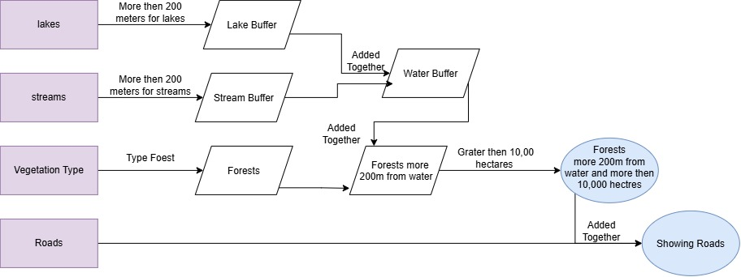
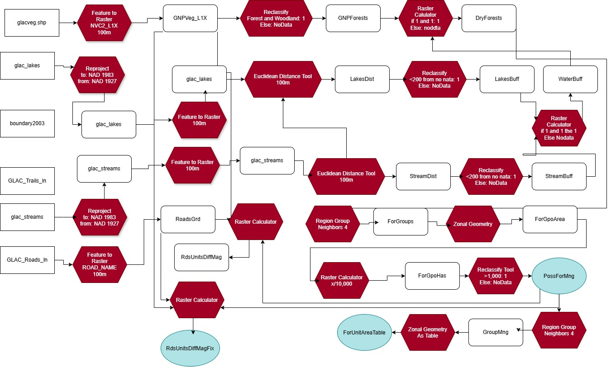
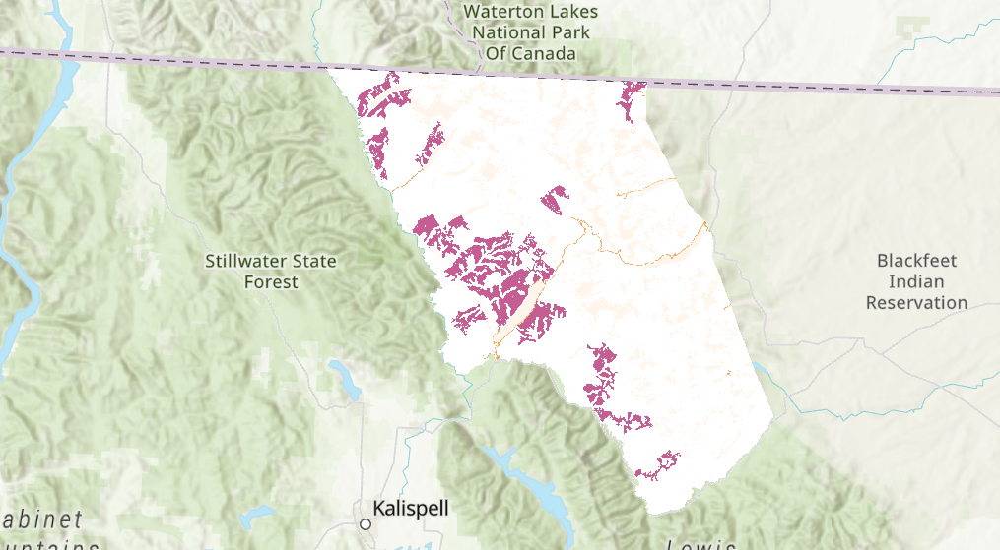
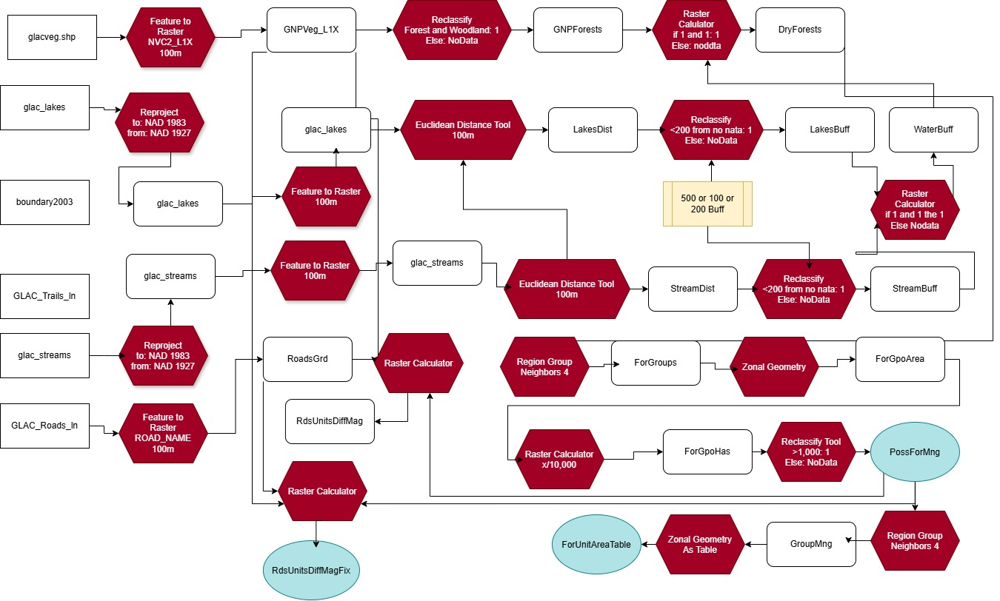
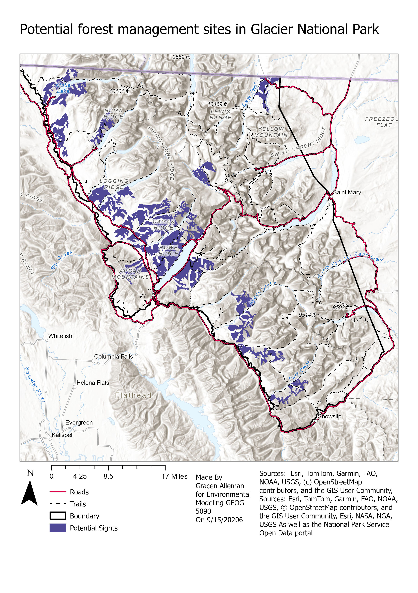
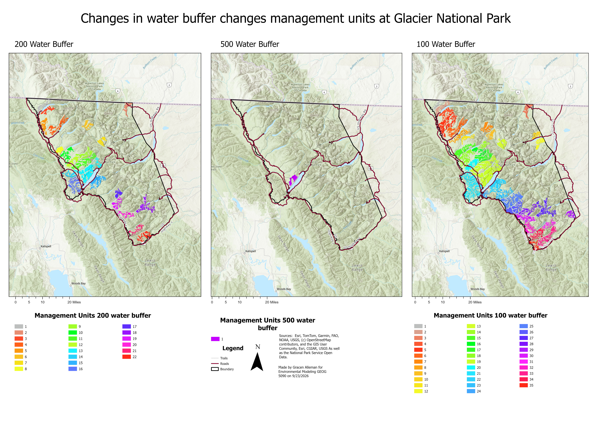

Environmental Modeling Project Suitability Analysis
Cover page
This work was done as a part of a lab in GEOG 5090: Environmental Modeling with Geographic Information Systems at the University of Colorado, Denver. I used National Park Service Data, but the outputs for this work were never used to make any decisions for the National Park Service nor are they aware that I used their data for educational purposes. This project is to show my knowledge and ability to perform suitability analysis, and sensitivity analysis with real data.
Table of contents
List of figures
List of tables
Executive summary
Methodology
The data used in this project was obtained from the National Park Service (NPS) open data portal. Some of the data had the extension e.00 which is an ArcGIS-specific data format that allows geospatial data to move between GIS platforms, including mobile GIS. The Interoperability extension is an ArcGIS extension that lets Arc read the .e00 file type. The following layers were used in the analysis:
| Layer Name | Source | Description |
|---|---|---|
| boundary2003 | NPS open data portal | The boundary layer sets the extent of the study area and is the bounds of Glacier National Park |
| glac_lakes | NPS open data portal | The lakes layer contains information about the location and characteristics of lakes within the study area |
| glac_streams | NPS open data portal | The streams layer contains information about the location and characteristics of streams within the study area |
| GLAC_Trails_In | NPS open data portal | The trails layer contains information about the location and characteristics of trails within the study area |
| GLAC_Roads_In | NPS open data portal | The roads layer contains information about the location and characteristics of roads within the study area and some roads leading to Glacier National Park |
| glacveg | NPS open data portal | The vegetation layer contains information about the location and characteristics of vegetation within the study area |
With the metadata for glacveg I was able to find out the quality of the data and the methods used to collect it. The study area was the whole of the WGIPP Glacier National Park. The methods involved taking 1618 aerial photographs at a scale of 1:15840 and then classifying based on the aerial photographs. It is at this time important to note that there is a Canadian portion of Glacier National Park called Waterton Lakes National Park that is not included in this analysis.
For the Data Engineering portion of the project I reprojected the older NAD27 coordinate system to the newer NAD83 coordinate system. Data Engineering is a form of data cleaning or massaging to fit what analysis needs to be done. Things like handling null values, making clean data types, and having the data readable in the computer program you are using, or, in the case of GIS platforms, reprojecting. I chose to reproject to NAD83 because it is the newer datum, and if I were to present the data or outputs, it would make it easier for the next person. Also, all of the data is in one projection, just different datums, making a reprojection trivial.
Here is a high-level flowchart showing the steps taken to complete the project.

Here is the in-depth flowchart showing the technical steps, and the geoprocessing tools used. The red hexagons represent the geoprocessing tools used, rectangles represent the data inputs and outputs where the blue circles are the final products.

Using the lake data, I found that Glacier National Park had 1292 lakes. I buffered the lakes by 200 meters to create a buffer zone around the lakes. I then performed a similar process to the stream layer affter convting the shapefile to a raster I then used Euclidian distance and reclassify to perform a buffer of 200 meters around the streams. Using the raster caulculator I used the & function to combine the two buffer zones of water bodies into one raster layer. I then added that to a filtered vegetation layer to create a raster layer of forested areas that are not within 200 meters of a water body. The & function was used instead of * because null values are not treated as 0, and the * function would have created a raster layer of all null values. This resulted in 131,365 hectares of dry forested areas.
After creating the raster layer of dry forested areas, I then used zonal geometry to group the dry forest patches. The neighbor function is all about how one defines a neighbor. FOUR has four neighbors and looks like figure 3 where the EIGHT has 8 neighbors and looks like figure 4. After using the zonal geometry tool I found 3,026 patches. After narrowing to patches greater than 1,000 hectares, 22 patches were identified. The median area of the patches greater than 1,000 hectares was 2,189 hectares, where the lagest pach was 58,780 hectares.
I then used used this function to create a new map that show roads alongside the identified patches in the same raster layer. ( Con(IsNull(“ForMngUnitst”), 0, “ForMngUnitst”) *1000 ) + ( Con(IsNull(“RoadsGrd”), 0, “RoadsGrid) * 10 ). One has to use the Con function because of the presence of null values in the raster layers; adding the two layers together would have resulted in an overabundance of null values in the output raster layer.

I also performed a sensitivity analysis on distance from water bodies to find the best distance. I ran the same analysis as before but with a buffer of 100 meters, 200 meters, and 500 meters. The 500 meter buffer had the least amount of dry forested areas greater than 1,000 hectares at 1,196 hectares in only one patch. The 200 meter buffer had 43,856 hectares of total management area and 22 patches where the 100 meter buffer had 89,202 hectares of total management area and 35 patches.

Outputs
The outputs are the different map layouts showing the maps and table outputs at different water buffer distances. The water buffer distance affect the area in the management units and number of management units. The other inputs would also have affecteed the size and number of management units like forest type and size greater than 1000 hectares, however these values were not checked in the sensivity analysis.
Here is the final output map showing the identified patches of dry forested areas that are not within 200 meters of a water body, and greater than 1000 hectares.

Table 2 shows the area of each identified patch of dry forested areas that are not within 200 meters of a water body, and greater then 1000 hectares.
Table 3 shows the 200 meter buffer around water, creating 22 unique forested patches greater than 1000 hectares.
Table 2: 100 Meter Buffer Area per Patch
| Patch ID | Area (ha) |
|---|---|
| 1 | 1,032 |
| 2 | 2,029 |
| 3 | 1,714 |
| 4 | 1,760 |
| 5 | 4,704 |
| 6 | 3,418 |
| 7 | 1,807 |
| 8 | 2,068 |
| 9 | 1,246 |
| 10 | 1,115 |
| 11 | 1,170 |
| 12 | 1,447 |
| 13 | 1,765 |
| 14 | 1,017 |
| 15 | 2,809 |
| 16 | 1,693 |
| 17 | 2,287 |
| 18 | 3,235 |
| Patch ID | Area (ha) |
|---|---|
| 19 | 11,103 |
| 20 | 2,263 |
| 21 | 7,515 |
| 22 | 3,643 |
| 23 | 2,439 |
| 24 | 1,018 |
| 25 | 4,094 |
| 26 | 3,198 |
| 27 | 3,210 |
| 28 | 1,762 |
| 29 | 1,233 |
| 30 | 2,170 |
| 31 | 1,166 |
| 32 | 1,828 |
| 33 | 3,166 |
| 34 | 2,003 |
| 35 | 1,175 |
| Total | 89,202 |
Table 3: 200 Meter Buffer Area per Patch
| Patch ID | Area (ha) |
|---|---|
| 1 | 1,621 |
| 2 | 1,449 |
| 3 | 1,288 |
| 4 | 2,695 |
| 5 | 1,721 |
| 6 | 1,326 |
| 7 | 1,201 |
| 8 | 1,305 |
| 9 | 1,915 |
| 10 | 2,157 |
| 11 | 3,240 |
| Patch ID | Area (ha) |
|---|---|
| 12 | 1,719 |
| 13 | 5,730 |
| 14 | 1,302 |
| 15 | 2,895 |
| 16 | 2,957 |
| 17 | 1,188 |
| 18 | 2,364 |
| 19 | 1,507 |
| 20 | 1,475 |
| 21 | 1,217 |
| 22 | 1,584 |
| Total | 43,856 |
Here is the final output map showing the identified paches of dry forested areas, greater than 1,000 hectares at a variety of water buffers side by side for comparison.

This is showing a fly-by of the map with hillshade on, with 200 meter water buffer layered over top. Link to file
Figure 9: 3D Map fly-by of Glacier National Park
References
Esri. (n.d.). ArcGIS basemap styles. https://developers.arcgis.com/documentation/mapping-and-location-services/mapping/basemaps/arcgis-styles-tiles/
OpenStreetMap contributors. (n.d.). Copyright and license. https://www.openstreetmap.org/copyright
National Park Service. (n.d.). NPS DataStore Home. https://irma.nps.gov/DataStore/
Razavi, S.,et al. (2021). The future of sensitivity analysis: An essential discipline for systems modeling and policy support. Environmental Modelling & Software, 137, Article 104954. https://doi.org/10.1016/j.envsoft.2020.104954
Saltelli, A., & Annoni, P. (2010). How to avoid a perfunctory sensitivity analysis. Environmental Modelling & Software, 25(11), 1508–1517. https://www.sciencedirect.com/science/article/abs/pii/S1364815210001180
U.S. National Vegetation Classification. (n.d.). U.S. National Vegetation Classification. https://usnvc.org/
Appendix
| Layer Name | Source | Metadata Location | Projection | Scale |
|---|---|---|---|---|
| boundary2003 | NPS open data portal | "C:\Lab2Data\records-1042581\OriginalMetadata_NPSDataStoreCode_1042581.xml" | NAD 1983 UTM Zone 12N (Transverse Mercator) | 1:24000 |
| glac_lakes | NPS open data portal | "C:\Lab2Data\records-1019882\OriginalMetadata_NPSDataStoreCode_1019882.xml" | NAD 1927 UTM Zone 12N (Transverse Mercator) | 1:24000 |
| glac_streams | NPS open data portal | "C:\Lab2Data\records-1034779\OriginalMetadata_NPSDataStoreCode_1034779.xml" | NAD 1927 UTM Zone 12N (Transverse Mercator) | 1:24000 |
| GLAC_Trails_In | NPS open data portal | "C:\Lab2Data\records-2300936\GLAC_Trails_Sept2023\GLAC_Trails_ln.shp.xml" | NAD 1983 (2011) UTM Zone 12N (Transverse Mercator) | 1:24000 |
| GLAC_Roads_In | NPS open data portal | "C:\Lab2Data\records-2300937\GLAC_Roads_Sept2023\GLAC_Roads_ln.shp.xml" | NAD 1983 (2011) UTM Zone 12N (Transverse Mercator) | 1:24000 |
| glacveg | NPS open data portal | “C:/AppData/Local/Temp/ArcGISProTemp11872/1hkcqmqd.ujd.htm” | NAD 1983 UTM Zone 12N (Transverse Mercator) | 1:24000 |